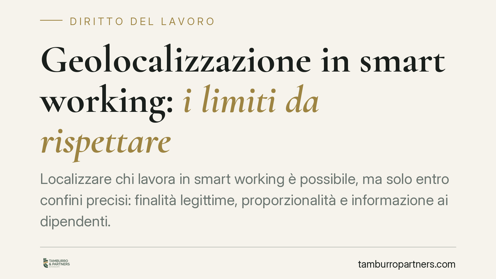

Geolocalizzazione in smart working: i limiti da rispettare
Localizzare chi lavora in smart working è possibile, ma solo entro confini precisi: finalità legittime, proporzionalità e informazione ai dipendenti. Senza queste garanzie i dati raccolti diventano inutilizzabili e non possono fondare provvedimenti disciplinari o licenziamenti. Il tema tocca il delicato equilibrio tra controllo datoriale e tutela della riservatezza del lavoratore agile.

Il contesto
La diffusione del lavoro agile ha spinto molte aziende a dotarsi di strumenti che consentono di verificare presenza, connessione e talvolta posizione dei dipendenti. La geolocalizzazione — cioè la rilevazione della posizione geografica tramite dispositivi o applicativi — è tra questi. La domanda ricorrente è se sia lecita e a quali condizioni.
La risposta non sta in una deroga concessa al datore dal regime dello smart working, ma nell'applicazione ordinaria delle regole sui controlli a distanza, integrate dalla disciplina sulla protezione dei dati personali.
> Nota di trasparenza: la sintesi di stampa da cui muove questo contributo riferisce di un orientamento della Corte di Cassazione senza indicarne gli estremi (numero, sezione, data). In assenza di un riferimento verificabile, esponiamo qui il quadro normativo consolidato, evitando di attribuire alla Corte principi non ancorati a una pronuncia identificabile.
Inquadramento normativo
Il perno resta l'art. 4 dello Statuto dei lavoratori (legge 300/1970), come riformulato nel 2015. Gli strumenti da cui può derivare un controllo a distanza dell'attività dei lavoratori sono ammessi solo per esigenze organizzative e produttive, per la sicurezza del lavoro o per la tutela del patrimonio aziendale, e a condizione di un accordo con le rappresentanze sindacali oppure, in mancanza, di un'autorizzazione dell'Ispettorato territoriale del lavoro (ITL).
È opportuno un chiarimento. La legge 81/2017 sul lavoro agile non modifica l'art. 4 St. lav. né introduce un regime speciale sui controlli: rinvia semmai al rispetto della disciplina generale. Non vi è quindi, per il lavoratore agile, né una deroga di favore per il datore né un irrigidimento automatico dei vincoli. Si applicano le stesse regole del lavoro in presenza, calate però su strumenti che, per loro natura, possono risultare più intrusivi.
Sul versante dati, il riferimento è il Codice in materia di protezione dei dati personali (d.lgs. 196/2003), profondamente novellato dal d.lgs. 101/2018 di adeguamento al GDPR (Regolamento UE 2016/679). Da qui i principi cardine: liceità, minimizzazione, proporzionalità e trasparenza. Rileva in particolare l'art. 114 del d.lgs. 196/2003, che àncora il trattamento dei dati raccolti tramite gli strumenti dell'art. 4 St. lav. al rispetto di quella norma.
Il nodo dell'inutilizzabilità
Qui si trova il punto più delicato per le aziende. L'art. 4, comma 3, St. lav. subordina l'utilizzabilità delle informazioni raccolte — a tutti i fini connessi al rapporto di lavoro, compresi quelli disciplinari — alla previa e adeguata informazione al lavoratore sulle modalità d'uso degli strumenti e dei controlli, nel rispetto del Codice privacy.
La conseguenza è concreta: se la geolocalizzazione è attivata senza accordo o autorizzazione, oppure senza informativa adeguata e finalità proporzionate, i dati raccolti non possono essere usati come prova. Un licenziamento fondato su tracciamenti illegittimi rischia quindi di cadere non perché il fatto contestato non sussista, ma perché il datore non può portarne la dimostrazione in giudizio.
Cosa cambia per l'azienda
Il bilanciamento non è astratto. Occorre distinguere:
- il tracciamento continuo e costante della posizione, difficilmente giustificabile perché eccede la finalità dichiarata e comprime in modo sproporzionato la riservatezza;
- le rilevazioni puntuali, circoscritte a momenti o operazioni specifici (accesso a sistemi, timbrature virtuali, sicurezza di beni), più facilmente compatibili con il principio di minimizzazione.
La proporzionalità si misura sulla necessità: se lo scopo può essere raggiunto con uno strumento meno invasivo, quello più invasivo diventa illegittimo.
Cosa fare in concreto
- Verificate la base giuridica: prima di attivare la geolocalizzazione, formalizzate l'accordo sindacale o richiedete l'autorizzazione all'ITL.
- Consegnate un'informativa chiara: indicate finalità, dati raccolti, tempi di conservazione e modalità dei controlli, in linea con il d.lgs. 196/2003 e il GDPR.
- Applicate la minimizzazione: limitate la rilevazione al necessario, preferendo controlli puntuali al tracciamento continuo.
- Documentate la valutazione d'impatto: predisponete e conservate la DPIA quando il trattamento presenta rischi elevati.
- Non usate dati illegittimi: escludete dalle contestazioni disciplinari qualsiasi informazione raccolta al di fuori delle condizioni di legge.
Disclaimer
Contributo informativo a cura di Tamburro & Partners - Avv. Giuseppe Tamburro. Non costituisce parere legale.
Ogni storia di lavoro ha i suoi tempi.
Se gestisci HR e vuoi un confronto su contenzioso, ispezioni o licenziamenti, scrivi allo studio. Ti rispondiamo entro un giorno lavorativo.